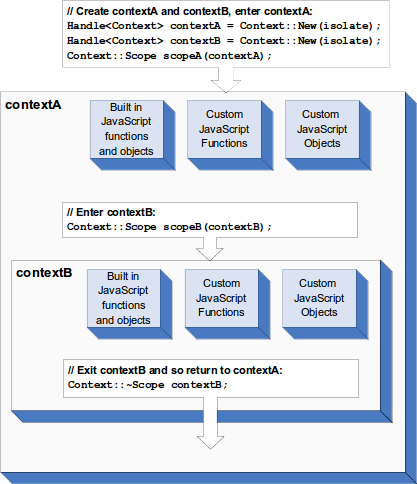

Badger LSM 实现剖析 · Part 1 · Memtable 与 SST
本文对应 commit 754278d
Badger LSM 参考了 RocksDB LSM 实现，本文结合 RocksDB 文档与 Badger 源码进行分析。
Memtable
Badger LSM 中 Memtable 采用了 Skiplist 实现，其 Key 类型是 []byte，而 Value 类型是 ValueStruct.
type ValueStruct struct {
Meta byte
UserMeta byte
ExpiresAt uint64
Value []byte
Version uint64 // 版本号不会被序列化
}
Skiplist 的实现利用arena连续的[]byte字节数组存储键值对，使用node存储键值对在arena中的位置（偏移量），将 Skiplist 扁平化存储，并且大量使用atomic操作以实现无锁操作(包括arena中使用原子操作实现无锁读写)。
type Skiplist struct源码
type Skiplist struct {
height int32 // 存储当前跳表高度
head *node // 头部节点
ref int32 // 引用计数
arena *Arena // arena指针
}
Skiplist 采用*node存储了头部指针，看似使用了链表的形式存储node，但实际上从node中并未直接看到任何链表结构。
type node struct源码
type node struct {
value uint64 // 同时包含了值的所在偏移量和值的大小(高32位为值的所在偏移量，低17位为值的大小)，合并存储是为了利用原子读写
keyOffset uint32 // 键所在偏移量
keySize uint16 // 键大小
height uint16
tower [maxHeight]uint32
}
看似node中并没有任何能体现出链表结构的字段，其实利用了tower字段存储了当前node在每一层级中的后继节点在arena中的偏移量(offset)。
除此之外，此跳跃列表拥有比传统链表更好的性能，其风骚之处在于arena，利用连续的字节数组存储键值对，并且利用原子操作实现高效的无锁跳跃列表。
type arena struct源码
type Arena struct {
n uint32
buf []byte
}
buf是起始时即申请好的固定大小（非常大）的字节数组，n是当前已使用buf位置的偏移量。在初始化时，n被置为1（0代表空）。
在arena中，分别有三种类型的数据存储在buf中，分别是node、key和value。在skl.go中，newNode方法展示了如何在arena中生成一个新的节点。
func newNode(arena *Arena, key []byte, v y.ValueStruct, height int) *node {
// 在arena中生成节点，并获得node在arena中的偏移量
offset := arena.putNode(height)
// 通过偏移量获取arena中的节点指针
node := arena.getNode(offset)
// 在arena中置入key，并将其偏移量存入node中
node.keyOffset = arena.putKey(key)
// 保存键的大小
node.keySize = uint16(len(key))
// 保存节点高度
node.height = uint16(height)
// 在arena中置入值，并将其偏移量和大小编码存入node中
node.value = encodeValue(arena.putVal(v), v.EncodedSize())
return node
}
无论是putNode、putKey还是putValue均是通过原子操作实现无锁并发安全。
func (s *Arena) putNode(height int) uint32 {
unusedSize := (maxHeight - height) * offsetSize
l := uint32(MaxNodeSize - unusedSize + nodeAlign)
n := atomic.AddUint32(&s.n, l)
y.AssertTruef(int(n) <= len(s.buf),
"Arena too small, toWrite:%d newTotal:%d limit:%d",
l, n, len(s.buf))
m := (n - l + uint32(nodeAlign)) & ^uint32(nodeAlign)
return m
}
func (s *Arena) putVal(v y.ValueStruct) uint32 {
l := uint32(v.EncodedSize())
n := atomic.AddUint32(&s.n, l)
y.AssertTruef(int(n) <= len(s.buf),
"Arena too small, toWrite:%d newTotal:%d limit:%d",
l, n, len(s.buf))
m := n - l
v.Encode(s.buf[m:])
return m
}
func (s *Arena) putKey(key []byte) uint32 {
l := uint32(len(key))
n := atomic.AddUint32(&s.n, l)
y.AssertTruef(int(n) <= len(s.buf),
"Arena too small, toWrite:%d newTotal:%d limit:%d",
l, n, len(s.buf))
m := n - l
y.AssertTrue(len(key) == copy(s.buf[m:n], key))
return m
}

在这三个方法中，通过计算需要使用的空间，原子操作（n := atomic.AddUint32(&s.n, l)）增加Arena.n的值，从而实现高效的并发安全写操作。
Put
newNode()展示了一个新的节点如何存储到arena中，然而未将节点置入 Skiplist 中，回到skl.go中，观察Skiplist.Put方法，了解键值对存储流程。
func (s *Skiplist) Put(key []byte, v y.ValueStruct) {
listHeight := s.getHeight()
var prev [maxHeight + 1]*node
var next [maxHeight + 1]*node
prev[listHeight] = s.head
next[listHeight] = nil
for i := int(listHeight) - 1; i >= 0; i-- {
// Use higher level to speed up for current level.
prev[i], next[i] = s.findSpliceForLevel(key, prev[i+1], i)
if prev[i] == next[i] {
prev[i].setValue(s.arena, v)
return
}
}
// ...more
Put方法分成两部分，上方代码是当前key已存在，采取直接替换value的方法。下半部分是当前key尚未存在，从而生成新的节点，插入新的键值对节点。
// ...more
height := randomHeight() // 随机生成新节点的高度（伯努利试验）
x := newNode(s.arena, key, v, height) // 生成新的节点
listHeight = s.getHeight() // 获取当前 Skiplist 高度
for height > int(listHeight) {
// 若新节点高度大于当前 Skiplist 高度，原子 CAS 当前 Skiplist 高度
if atomic.CompareAndSwapInt32(&s.height, listHeight, int32(height)) {
break
}
// 获取新的 Skiplist 高度
listHeight = s.getHeight()
}
for i := 0; i < height; i++ {
for {
if prev[i] == nil {
y.AssertTrue(i > 1)
prev[i], next[i] = s.findSpliceForLevel(key, s.head, i)
y.AssertTrue(prev[i] != next[i])
}
nextOffset := s.arena.getNodeOffset(next[i])
x.tower[i] = nextOffset
if prev[i].casNextOffset(i, nextOffset, s.arena.getNodeOffset(x)) {
break
}
prev[i], next[i] = s.findSpliceForLevel(key, prev[i], i)
if prev[i] == next[i] {
y.AssertTruef(i == 0, "Equality can happen only on base level: %d", i)
prev[i].setValue(s.arena, v)
return
}
}
}
}
Put()方法的多个部分都使用了findSpliceForLevel()，其作用是在指定 Skiplist 层级查找给出key的前继节点和后继节点。
func (s *Skiplist) findSpliceForLevel(key []byte, before *node, level int) (*node, *node) {
for {
next := s.getNext(before, level)
if next == nil {
return before, next
}
nextKey := next.key(s.arena)
cmp := y.CompareKeys(key, nextKey)
if cmp == 0 {
return next, next
}
if cmp < 0 {
return before, next
}
before = next
}
}
注意到Put方法在需要生成新节点时，使用了双层嵌套循环对节点当前高度所在链表进行更新。
由于在将当前节点设置为前继节点的后继节点是存在CAS操作（prev[i].casNextOffset(i, nextOffset, s.arena.getNodeOffset(x))），当出现对同一个prev[i]进行并发更新时，多个CAS 操作只有一个会成功，对于更新成功的一方，直接break即可。而对于更新失败，意味着此时其前继或是后继节点将会发生变化，需要重新查找前继和后继节点（prev[i], next[i] = s.findSpliceForLevel(key, prev[i], i)），直到更新成功为止。
for i := 0; i < height; i++ {
for {
if prev[i] == nil {
y.AssertTrue(i > 1)
prev[i], next[i] = s.findSpliceForLevel(key, s.head, i)
y.AssertTrue(prev[i] != next[i])
}
// 获取后继节点在arena中的偏移量
nextOffset := s.arena.getNodeOffset(next[i])
// 设置当前节点的i层链表中的后继节点
x.tower[i] = nextOffset
// 通过 CAS 将当前节点替换为前继节点的后继节点
if prev[i].casNextOffset(i, nextOffset, s.arena.getNodeOffset(x)) {
break
}
// CAS 失败，重新查找当前节点的前继及后继节点
prev[i], next[i] = s.findSpliceForLevel(key, prev[i], i)
if prev[i] == next[i] {
y.AssertTruef(i == 0, "Equality can happen only on base level: %d", i)
prev[i].setValue(s.arena, v)
return
}
}
}
Memtable 总结
- Memtable 采用 Skiplist 实现
- Skiplist 利用字节数组与偏移量存储
node、key和value信息，并利用大量原子操作实现高效并发安全读写操作。 arena中的字节数组（buf）在构造时即被固定，在db.go中，arena大小被设置为opt.MaxTableSize + opt.maxBatchSize + opt.maxBatchCount*int64(skl.MaxNodeSize)。- 对已存在于
memtable中的key进行更新时，仅更新其节点中值在arena.buf中的偏移量，其旧值仍存在与arena.buf中，并不进行回收，从而造成浪费。然而考虑到 LSM 原理，此操作处于可接受的范围。
Sorted String Table
SST 是只读的，通过package table中的文件及方法，观察SST如何进行序列化/反序列化以及查找。
badger的SST格式参照了RocksDB，其文档于table_format，然而badger并不完全遵从RocksDB的做法，在某些地方有些许差异。
(RocksDB Table Format) <beginning_of_file> [data block 1] [data block 2] ... [data block N] [meta block 1] ... [meta block K] [metaindex block] [index block] [Footer] (fixed size; starts at file_size - sizeof(Footer)) <end_of_file>
Builder
首先观察一个Memtable是如何变为SST的。在badger中，通过table/builder.go将Memtable中的所有key/value pairs序列化。
type Builder struct
type Builder struct {
counter int // 当前 block 已经写入多少个 key
buf *bytes.Buffer // 存储Table的buffer
baseKey []byte // 当前block的第一个key
baseOffset uint32 // 当前block相对于整个buf的偏移量
restarts []uint32 // 所有blocks的baseOffset
prevOffset uint32 // 上一个键值对在当前block中的偏移量
keyBuf *bytes.Buffer // 存储所有key的buffer，用于构造布隆过滤器
keyCount int // Table key 总量
}
Builder首先通过NewTableBuilder创建一个实例
func NewTableBuilder() *Builder {
return &Builder{
keyBuf: newBuffer(1 << 20),
buf: newBuffer(1 << 20),
prevOffset: math.MaxUint32, // Used for the first element!
}
}
通过Add()方法观察一个键值对是如何置入Builder中的
func (b *Builder) Add(key []byte, value y.ValueStruct) error {
if b.counter >= restartInterval {
b.finishBlock()
b.restarts = append(b.restarts, uint32(b.buf.Len()))
b.counter = 0
b.baseKey = []byte{}
b.baseOffset = uint32(b.buf.Len())
b.prevOffset = math.MaxUint32
}
b.addHelper(key, value)
return nil // Currently, there is no meaningful error.
}
在Builder中存在着block的概念，一个block是多个键值对的集合，在badger中，每个block默认最多能存储100个键值对（restartInterval = 100)
跳过Add()方法中添加新block的部分，先看看添加键值对的主逻辑部分addHelper()方法。
addHelper()首先将剔除时间戳的keyNoTs（badger中在写入key时会对其添加时间戳Ts）及其长度klen写入keyBuf，keyBuf在Builder生成Table时会被用于构造布隆过滤器，同时递增keyCount。
func (b *Builder) addHelper(key []byte, v y.ValueStruct) {
// Add key to bloom filter.
if len(key) > 0 {
var klen [2]byte
keyNoTs := y.ParseKey(key)
binary.BigEndian.PutUint16(klen[:], uint16(len(keyNoTs)))
b.keyBuf.Write(klen[:])
b.keyBuf.Write(keyNoTs)
b.keyCount++
}
// ...more
接下来通过keyDiff()方法计算传入key与baseKey从头部开始相差的部分，以节省空间。考虑到 LSM 模型，有序遍历Memtable中键值对并有序地通过Add()方法添加至Builder并生成SST，diffKey在具有多个相似Key的场景下能节省非常多的空间。
// ...more
var diffKey []byte
if len(b.baseKey) == 0 {
b.baseKey = append(b.baseKey[:0], key...)
diffKey = key
} else {
diffKey = b.keyDiff(key)
}
// ...more
随后针对这个键值对生成header，由于使用了diffKey的理念，plen记录了当前key与baseKey的具有相同前缀的偏移量，并分别保存klen（diffKey长度）、vlen（值长度）及prev（前一个键值对相对于当前block的偏移量）。
// ...more
h := header{
plen: uint16(len(key) - len(diffKey)),
klen: uint16(len(diffKey)),
vlen: uint16(v.EncodedSize()),
prev: b.prevOffset, // prevOffset is the location of the last key-value added.
}
// 重新计算prevOffset，供下一个键值对使用
b.prevOffset = uint32(b.buf.Len()) - b.baseOffset
// ...more
最后将header、diffKey和valueStruct写入buf中。
// ...more
var hbuf [10]byte
h.Encode(hbuf[:])
b.buf.Write(hbuf[:])
b.buf.Write(diffKey) // We only need to store the key difference.
v.EncodeTo(b.buf)
b.counter++ // Increment number of keys added for this current block.
}
一个键值对的结构如下
<beginning_of_key_value_pair>
[header]
[diffKey]
[valueStruct]
<end_of_key_value_pair>
block
Builder中使用block的概念组织键值对，就如Add()方法及addHelper()方法中看到的。
在Add()方法中，检测到当前block键值对个数超过了restartInterval，将会建立一个新的block
// in Add() method
if b.counter >= restartInterval {
b.finishBlock()
// Start a new block. Initialize the block.
b.restarts = append(b.restarts, uint32(b.buf.Len()))
b.counter = 0
b.baseKey = []byte{}
b.baseOffset = uint32(b.buf.Len())
b.prevOffset = math.MaxUint32 // First key-value pair of block has header.prev=MaxInt.
}
b.finishBlock()函数将在当前block尾部添加一个空键值对，此举利用空键值对记录下prevOffset的位置，用于反向遍历。
func (b *Builder) finishBlock() {
b.addHelper([]byte{}, y.ValueStruct{})
}
Add()方法中在调用b.finishBlock后，通过b.restarts = append(b.restarts, uint32(b.buf.Len()))记录下新block的起始位置，b.restarts会在生成Table时利用其生成block Index。
由此可见一个block的结构如下
<beginning_of_block>
[base key/value pair 0]
[key/value pair 1]
...
[key/value pair N]
[empty key/value pair]
<end_of_block>
Finish() 序列化 Table
Builder最后通过Finish()函数序列化生成Table。
首先通过遍历keyBuf获取所有key，随后利用其生成布隆过滤器。
func (b *Builder) Finish() []byte {
bf := bbloom.New(float64(b.keyCount), 0.01)
var klen [2]byte
key := make([]byte, 1024)
for {
if _, err := b.keyBuf.Read(klen[:]); err == io.EOF {
break
} else if err != nil {
y.Check(err)
}
kl := int(binary.BigEndian.Uint16(klen[:]))
if cap(key) < kl {
key = make([]byte, 2*int(kl)) // 2 * uint16 will overflow
}
key = key[:kl]
y.Check2(b.keyBuf.Read(key))
bf.Add(key)
}
// ...more
随后调用b.finishBlock()结束这最后一个block
// ...more
b.finishBlock()
// ...more
进而通过b.restarts生成定长block Index的，并将索引写入buf
// ...more
index := b.blockIndex()
b.buf.Write(index)
// ...more
blockIndex()，通过b.restarts生成block所在偏移量的索引，并在末尾添加索引总长度。func (b *Builder) blockIndex() []byte { // Store the end offset, so we know the length of the final block. b.restarts = append(b.restarts, uint32(b.buf.Len())) // Add 4 because we want to write out number of restarts at the end. sz := 4*len(b.restarts) + 4 out := make([]byte, sz) buf := out for _, r := range b.restarts { binary.BigEndian.PutUint32(buf[:4], r) buf = buf[4:] } binary.BigEndian.PutUint32(buf[:4], uint32(len(b.restarts))) return out }由次可见，
block Index的格式如下<beginning_of_block_index> [block 0 offset] [block 1 offset] ... [block N offset] [block Index size] <end_of_block_index>
最后是序列化布隆过滤器，并将布隆过滤器长度写入buf末尾的4个字节中，返回buf.Bytes()
// ...more
bdata := bf.JSONMarshal()
n, err := b.buf.Write(bdata)
y.Check(err)
var buf [4]byte
binary.BigEndian.PutUint32(buf[:], uint32(n))
b.buf.Write(buf[:])
return b.buf.Bytes()
}
从而获得一个如下格式的序列化后的 Table
<beginning_of_table>
[data block 0]
[data block 1]
...
[data block N]
[block index]
[block index size (4 bytes)]
[bloom filter]
[bloom filter size (4 bytes)]
<end_of_table>
可以看出，就目前的Table格式而言，在block内部无法进行二分查找，只能遍历对应block找出对应的key，但是目前已有 Pull request block iterator: seek with binary search 解决此问题，为了行文流畅，本文暂不探讨此PR。
Table
Builder通过Finish()生成序列化后的Table，随后会被写入.sst文件中，此时再通过Table.open()打开该文件，从而使得.sst文件能进行查找及合并等操作。
type Table struct
type Table struct {
sync.Mutex
fd *os.File // 文件指针
tableSize int // .sst文件大小
blockIndex []keyOffset
ref int32 // For file garbage collection. Atomic.
loadingMode options.FileLoadingMode
mmap []byte // 通过mmap方式
smallest, biggest []byte // 该.sst文件的最小及最大的key
id uint64 // .sst文件id
bf bbloom.Bloom // 布隆过滤器
}
OpenTable()
通过OpenTable()函数反序列化并构造出Table，首先是获取传入文件的信息，获取.sst文件的id、size，并构造Table结构体。
func OpenTable(fd *os.File, loadingMode options.FileLoadingMode) (*Table, error) {
fileInfo, err := fd.Stat()
if err != nil {
// It's OK to ignore fd.Close() errs in this function because we have only read
// from the file.
_ = fd.Close()
return nil, y.Wrap(err)
}
filename := fileInfo.Name()
id, ok := ParseFileID(filename)
if !ok {
_ = fd.Close()
return nil, errors.Errorf("Invalid filename: %s", filename)
}
t := &Table{
fd: fd,
ref: 1, // Caller is given one reference.
id: id,
loadingMode: loadingMode,
}
t.tableSize = int(fileInfo.Size())
// ...more
随后根据loadingMode决定使用mmap或是载入内存的方式将fd中数据读入table中，无论是那种模式，都是将数据转换为[]byte指针，对后续操作大多数都是透明的。
// ...more
if loadingMode == options.MemoryMap {
t.mmap, err = y.Mmap(fd, false, fileInfo.Size())
if err != nil {
_ = fd.Close()
return nil, y.Wrapf(err, "Unable to map file")
}
} else if loadingMode == options.LoadToRAM {
err = t.loadToRAM()
if err != nil {
_ = fd.Close()
return nil, y.Wrap(err)
}
}
// ...more
随后从文件中读入索引，t.readIndex()函数将会载入布隆过滤器并赋值到Table.bf中，解析block Index并根据索引获取每个block的首个key并赋值到Table.blockIndex中。
// ...more
if err := t.readIndex(); err != nil {
return nil, y.Wrap(err)
}
// ...more
最后获取该Table的最大及最小值。
// ...more
it := t.NewIterator(false)
defer it.Close()
it.Rewind()
if it.Valid() {
t.smallest = it.Key()
}
it2 := t.NewIterator(true)
defer it2.Close()
it2.Rewind()
if it2.Valid() {
t.biggest = it2.Key()
}
return t, nil
}
Iterator
Iterator分别有Block Iterator、Table Iterator以及Concat Iterator。
Block Iterator
block iterator是针对单个block内部的迭代器。
type blockIterator struct {
data []byte
pos uint32
err error
baseKey []byte
key []byte
val []byte
init bool
last header // The last header we saw.
}
block iterator中最重要的是Seek()函数，用于查找需要的键。由于block内部的键值对是以有序双向列表，但也如前文所述，即使是有序的列表，block并没有提供足够的信息用于进行二分查找，从而只能使用遍历的方式查找对应的key。
同时，Seek()函数由于其函数名语义，并没有直接返回可能存在的键值对，又由于block内部的键值对按照从小到大排序，Seek()将该iterator定位到最接近该键的位置（y.CompareKeys(k, key) >= 0），而判断该位置的键值对是否相等则交由调用者解决。
func (itr *blockIterator) Seek(key []byte, whence int) {
itr.err = nil
switch whence {
case origin:
itr.Reset()
case current:
}
var done bool
for itr.Init(); itr.Valid(); itr.Next() { // 通过iter迭代器遍历block内部的key
k := itr.Key() // 获取 key
if y.CompareKeys(k, key) >= 0 {
done = true
break
}
}
if !done {
itr.err = io.EOF
}
}
Table Iterator
Table Iterator是针对单个Table的迭代器。一个Table内部有多block，block不仅内部是有序的，多个block相互之间也是单调递增的，同时也有block Index有序地记录了各个block的baseKey的偏移量。
type Iterator struct {
t *Table // 迭代器对应的Table
bpos int // 目前迭代的block索引
bi *blockIterator // 对应block的迭代器
err error
reversed bool // 是否反向遍历
}
Table Iterator的Seek()就利用了block Index进行二分查找，快速定位key所在block。
func (itr *Iterator) Seek(key []byte) {
if !itr.reversed {
itr.seek(key)
} else {
itr.seekForPrev(key)
}
}
关注正向遍历itr.seek()，origin指示初始化迭代器再进行遍历。
func (itr *Iterator) seek(key []byte) {
itr.seekFrom(key, origin)
}
seekFrom函数通过二分查找定位出key可能所在的后一个block索引，然后通过seekHelper定位该key。
func (itr *Iterator) seekFrom(key []byte, whence int) {
itr.err = nil
switch whence {
case origin:
itr.reset()
case current:
}
idx := sort.Search(len(itr.t.blockIndex), func(idx int) bool {
ko := itr.t.blockIndex[idx]
return y.CompareKeys(ko.key, key) > 0 // 没有使用 >= 0，从而对baseKey == key 情况也能使用相同的 itr.seekHelper(idx-1, key) 逻辑处理。
})
if idx == 0 {
// idx 等于 0 说明该 Table 的最小的键也大于需要查找的 key
itr.seekHelper(0, key) // 相当于 seekToFirst()
return
}
itr.seekHelper(idx-1, key) // 在前一个block查找该key
if itr.err == io.EOF { // 此测试为真即代表该key不存在
if idx == len(itr.t.blockIndex) {
return
}
itr.seekHelper(idx, key) // seekHelper 实际调用了 blockIterator.Seek 函数，由于查找失败会导致 blockIterator 触底，此处用于跳转至下一个block
}
}
seekHelper()用于获取并在对应block中查找key。
func (itr *Iterator) seekHelper(blockIdx int, key []byte) {
itr.bpos = blockIdx
block, err := itr.t.block(blockIdx)
if err != nil {
itr.err = err
return
}
itr.bi = block.NewIterator()
itr.bi.Seek(key, origin)
itr.err = itr.bi.Error()
}
Concat Iterator
Concat Iterator是多个Table的遍历器，从它的实现来看，要求多个Table相互之间是有序的。
type ConcatIterator struct {
idx int // 当前使用的迭代器索引
cur *Iterator // 当前使用的迭代器
iters []*Iterator // 对应着各个Table
tables []*Table // 以升序排列的各个Table
reversed bool
}
同样是Seek()操作，展示Concat Iterator是如何搜索一个 key 的。
由于ConcatIterator.Seek()函数使用了二分搜索，所以必须由调用者保证tables是有序的。
Seek()同样具有reversed的功能，但在这里只关注正向查找的功能。Seek()首先在各个table中使用二分搜索，查找出key所在的table，继而通过该table的Iterator.Seek()在该Table内继续查找key。
func (s *ConcatIterator) Seek(key []byte) {
var idx int
if !s.reversed {
idx = sort.Search(len(s.tables), func(i int) bool {
return y.CompareKeys(s.tables[i].Biggest(), key) >= 0
})
} else {
n := len(s.tables)
idx = n - 1 - sort.Search(n, func(i int) bool {
return y.CompareKeys(s.tables[n-1-i].Smallest(), key) <= 0
})
}
if idx >= len(s.tables) || idx < 0 {
s.setIdx(-1)
return
}
s.setIdx(idx)
s.cur.Seek(key)
}
写在最后
Part 1 剖析了 Memtable 以及 Sorted String Table 的结构，LSM 即由这两种结构组成。下一节继续探讨 Memtable 转换至 Sorted String Table 以及 Sorted String Table 之间的整合压缩Compaction过程。


从 Node.js C++ Addon 观察 Js 在 v8 中的表示方式
Native Abstractions for Node.js (nan)
A header file filled with macro and utility goodness for making add-on development for Node.js easier
Nan 是一个具有更丰富的功能封装以方便开发 Node.js C++ 插件的头文件. 跟随 Nan 的 README 文件, 从 v8 引擎开始, 同时结合 libuv , 再到 Node.js 中了解 C++ 插件, 最后观察nan究竟做了哪些封装.
The V8 Getting Started * Guide
v8本来是为Chrome设计的JavaScript解析引擎, 看的时候多从浏览器的角度去考虑.
Hello World
接下来会给出一个Hello Example, 演示如何使用v8打印出Hello World. 在给出代码之前, 首先简述几个概念:
Isolate: 表示一个v8虚拟机实例.Local Handle: 指向v8对象的引用对象, 由于v8引擎的垃圾回收机制的工作方式, 所有的v8对象都需要通过handle访问.Handle Scope: 一个或多个Handle的集合. 当我们使用完多个Handle后, 无需通过逐个析构的方式去删除它们, 而是通过析构Handle Scope就可以了.Context: 为JavaScript在同一个v8虚拟机实例中提供隔离的执行环境.
更详细的解释将会在Embedder's Guide中进行讨论.
将hello-world.cc拆开来看
① 启动v8部分.
#include <stdio.h>
#include <stdlib.h>
#include <string.h>
#include "include/libplatform/libplatform.h"
#include "include/v8.h"
int main(int argc, char* argv[]) {
--// Initialize V8.
--
--// 初始化International Components for Unicode
--// 用于处理Unicode编码
--// 从本地的icudtl.dat读取编解码数据
--v8::V8::InitializeICUDefaultLocation(argv[0]);
--// natives_blob.bin 和 snapshot_blob.bin
--// 用于加速启动V8引擎
--v8::V8::InitializeExternalStartupData(argv[0]);
--// 初始化v8平台
--std::unique_ptr<v8::Platform> platform = v8::platform::NewDefaultPlatform();
--// 初始化v8管理平台
--v8::V8::InitializePlatform(platform.get());
--v8::V8::Initialize();
v8::V8::InitializeICUDefaultLocation:v8的Unicode字符处理依赖于icu库, 同时使用该函数从外部的icudtl.dat文件加载Unicode的编解码数据.v8::V8::InitializeExternalStartupData:v8在启动的时候需要预先加载一些JavaScript build-in函数, 例如math、full-featured regular expression engine, 这个启动过程相当缓慢. 而自从4.3版本开始,v8引入了snapshotting快照加载功能用于加速这个过程, 目前依赖两种快照natives_blob.bin和snapshot_blob.bin.natives_blob.bin: 存储了JavaScript build-in函数解析执行后的内存布局快照(JavaScript build-in可以在v8/src/objects.h中的FUNCTIONS_WITH_ID_LIST宏中查看.snapshot_blob.bin: 存储了v8启动后的内存布局快照.
v8::platform: 管理v8引擎实例isolate的接口, 保存多个isolate的执行状态和所在线程.
② 创建v8引擎实例
--// Create a new Isolate and make it the current one.
--v8::Isolate::CreateParams create_params;
--create_params.array_buffer_allocator =
-- v8::ArrayBuffer::Allocator::NewDefaultAllocator();
--v8::Isolate* isolate = v8::Isolate::New(create_params);
create_params: 存储v8引擎的初始化参数v8::Isolate::New: 实例化v8引擎
③ 创建JavaScript代码的执行环境
// 创建临时作用域用于自动析构 HandleScope
--{
----v8::Isolate::Scope isolate_scope(isolate);
----// Create a stack-allocated handle scope.
----// HandleScope, 之前的概念简要中提到的利用RAII创建和析构Handle
----// HandleScope作用于isolate(v8实例)
----// 表示从此开始在isolate中创建的handle在作用域结束时回收
----v8::HandleScope handle_scope(isolate);
----// Create a new context.
----// 创建隔离的`JavaScript`代码执行环境
----v8::Local<v8::Context> context = v8::Context::New(isolate);
----// Enter the context for compiling and running the hello world script.
----// Context::Scope 作用于 context
----// 表示从此开始在context中创建的实例在离开作用域时回收
----v8::Context::Scope context_scope(context);
----// Create a string containing the JavaScript source code.
----// 将`JavaScript`代码实例化表示为 v8::String
----// 此处的JavaScript代码为 'Hello' + ', World'
----v8::Local<v8::String> source =
---- v8::String::NewFromUtf8(isolate, "'Hello' + ', World!'",
---- v8::NewStringType::kNormal)
---- .ToLocalChecked();
----// Compile the source code.
----// 解析JavaScript代码
----v8::Local<v8::Script> script =
---- v8::Script::Compile(context, source).ToLocalChecked();
----// Run the script to get the result.
----// 执行编译后的`JavaScript`代码, 并且在context中执行
----v8::Local<v8::Value> result = script->Run(context).ToLocalChecked();
----// Convert the result to an UTF8 string and print it.
----// 从v8::Value中提取执行结果, 转换为utf-8字符串
----v8::String::Utf8Value utf8(isolate, result);
----printf("%s\n", *utf8);
--}
//↑ 临时作用域结束, 自动析构临时作用域内创建的HandleScope
v8::Isolate::Scope: 作用于isolate实例, 利用RAII自动管理此作用域内所有的操作, 在离开作用域时回收.v8::Local<T>: 相当于只能指针, 表示被引用对象, 由HandleScope管理, 离开作用域时析构该引用.v8::Script: 编译后的JavaScript代码的AST抽象表示根节点, 必须在实例化是绑定到v8::Context.
④ 析构v8实例
--// Dispose the isolate and tear down V8.
--isolate->Dispose();
--v8::V8::Dispose();
--v8::V8::ShutdownPlatform();
--delete create_params.array_buffer_allocator;
--return 0;
}
Hello World启示
v8依赖引用计数进行垃圾回收, 并且在v8提供的API接口中利用Handle进行引用计数.Handle仅仅是对v8引擎实例中v8数据结构的引用, 在解构后仅仅是将其引用计数－1, 何时进行内存回收由垃圾回收实例决定.v8中可以有多个v8引擎实例, 但每个实例中的v8数据结构都是与v8引擎强关联的, 无法跨引擎传递使用.
Embedder's Guide
解释v8提供的C++ API中的核心概念:
HandleContextsTemplatesAccessorsInterceptorsSecurity ModelExceptionsInheritance
Handles and Garbage Collection
Handle是v8引擎堆中JavaScript对象的引用. v8垃圾回收器会将无法访问的JavaScript对象进行回收. 而在垃圾回收过程中, JavaScript对象在内存中的位置会经常移动, 当一个对象移动完成后, 所有在此对象上的Handle引用也会更新, 重新指向对象的新地址.
Handle有几种类型:
Local Handle:Local中对JavaScript对象的引用是基于Handle Stack的. 必须配合HandleScope一起使用.HandleScope在构造时, 会营造出Handle Stack, 在此之后构造的所有Local Handle都由这个HandleScope管理, 并在HandleScope析构后Clear, 释放Local Handle对JavaScript对象的引用.Local中对JavaScript对象的引用是基于Handle Stack的, 由HandleScope管理.Handle Stack要与C++ Stack区分开,HandleScope是基于C++ Stack的, 在离开作用域时析构, 而Local是基于Handle Stack的, 在Handle Stack删除时解开对JavaScript对象的引用并析构.Local必须执行在HandleScope中, 否则会造成内存泄漏, 还有可能引起v8崩溃.- 由于
HandleScope是基于C++ Stack的, 如果Local被复制(或别引用)离开了当前作用域(也同时离开了当前HandleScope), 需要使用EscapableHandleScope或者利用其中的对象指针生成Persistent -
Handleis an alias forLocalfor historical reasons.
Persistent Handle:Persistent同样是对于v8引擎中JavaScript对象的引用, 与Local不同的是Persistent并不由HandleScope管理, 而是需要调用Persistent Handle::Reset()进行其对JavaScript对象的解引用.

Contexts
Context是在v8引擎实例Isolate内部的一个独立地JavaScript执行环境. 在执行JavaScript代码时, 必须指定其Context.
Context的存在是由于JavaScript的内置函数与对象(build-in functions and objects), 全局运行环境(global)都是可以被用户代码改变的. 如果两份不相关的代码在没有Context的情况下运行, 那么其中一份代码改变了全局相关属性后, 另一份JavaScript代码也会受到影响.
Contexts Extensive Caching
Context中有独立的build-in functions and objects、global, 而build-in里有不少是由JavaScript低等级代码(低级胶水JavaScript, JavaScript中通过%调用C++函数), 这意味着每次新建Context的时候都需要解析并生成一份build-in.
不过v8提供了对build-in的缓存, 在第一份Context初始化完成后, 后续生成的Context只需沿用已经初始化完成的build-in就可以了.
而且v8提供快照功能, 在v8进程初始化的时候可以通过编译时提前准备好的snapshot_blob.bin快照, 初始化第一个Context堆内存空间并将build-in缓存起来.

即使是使用了缓存技术, 每个Context仍然是独立的, 只是他们的对全局对象和build-in的修改记录在自己的内存空间里, 而不会影响缓存数据.
Templates
v8语义下的template指的是JavaScript函数和对象在C++与之对应的抽象. 通过template可以在JavaScript中访问被template封装后的C++函数和对象.
在JavaScript语义下, Function和Object具有很多相似的地方, 但是在C++语义下, 这两种是完全不一样的东西. 为了将C++语义下的Function与Object映射到v8引擎中, v8提供了两种Template
Function Template: 提供了C++中对JavaScript函数的抽象, 可以在C++中创建JavaScript函数. 也可以包裹单个C++函数, 并抽象成JavaScript函数.Object Template: 提供了C++中对JavaScript中对象实例的抽象.
重申一下, Function Template是用于在C++中(描述)创建JavaScript中的函数的, 而Object Template是用于在C++中(描述)创建并返回JavaScript对象实例的.
在C++中可以通过Function Template来模拟JavaScript中的类, 而Object Template用于创建JavaScript对象实例.
// Create a template for the global object and set the
// built-in global functions.
Local<ObjectTemplate> global = ObjectTemplate::New(isolate);
global->Set(String::NewFromUtf8(isolate, "log"), FunctionTemplate::New(isolate, LogCallback));
// Each processor gets its own context so different processors
// do not affect each other.
Persistent<Context> context = Context::New(isolate, NULL, global);
Accessors
v8中提供的Accessors与JavaScript中的访问器概念一样, 提供控制对象中属性的访问行为.
通过对象中的SetAccessor方法可以对对象添加访问器属性, 并且通过AccessorGetterCallback、AccessorSetterCallback添加对象的[Getter|Setter], 以及AccessControl控制访问器权限.
enum AccessControl {
DEFAULT = 0,
ALL_CAN_READ = 1,
ALL_CAN_WRITE = 1 << 1,
PROHIBITS_OVERWRITING = 1 << 2
};
typedef void (*AccessorGetterCallback)(Local<String> property,
const PropertyCallbackInfo<Value>& info);
typedef void (*AccessorSetterCallback)(Local<String> property,
Local<Value> value,
const PropertyCallbackInfo<void>& info);
Interceptors
访问对象前插一脚
Interceptors提供了访问对象前调用自定义函数的机会. Interceptors分为两种
named property interceptors: 在通过字符串名字(string name)访问对象前调用的, 例如document.theFormName.elementName.indexed property interceptors: 通过索引访问对象前调用. 例如document.forms.elements[0].
在目前的[Embedder's Guide](https://github.com/v8/v8/wiki/Embedder%27s-Guide)中, 使用的分别是
void ObjectTemplate::SetNamedPropertyHandler(
IndexedPropertyGetterCallback getter,
IndexedPropertySetterCallback setter = 0,
IndexedPropertyQueryCallback query = 0,
IndexedPropertyDeleterCallback deleter = 0,
IndexedPropertyEnumeratorCallback enumerator = 0,
Local<Value> data = Local<Value>());
void ObjectTemplate::SetIndexedPropertyHandler(
NamedPropertyGetterCallback getter,
NamedPropertySetterCallback setter = 0,
NamedPropertyQueryCallback query = 0,
NamedPropertyDeleterCallback deleter = 0,
NamedPropertyEnumeratorCallback enumerator = 0,
Local<Value> data = Local<Value>());
但是以上两个函数都已经在最新的v8源码中被标记为deprecate, 取而代之的是
void SetHandler(const NamedPropertyHandlerConfiguration& configuration);
void SetHandler(const IndexedPropertyHandlerConfiguration& configuration);
Different between Interceptors And Accessor
Interceptors会影响对象所有属性的访问行为, 而Accessor只会针对单个属性.
Exceptions
v8在运行时发生错误会抛出异常, 而在C++中可以利用TryCatch类作用域Isolate, 捕获v8运行过程中抛出的异常.
TryCatch trycatch(isolate);
Local<Value> v = script->Run();
// 当发生异常时, `v8`会返回一个空的`Value`实例
if (v.IsEmpty()) {
Local<Value> exception = trycatch.Exception();
String::Utf8Value exception_str(exception);
printf("Exception: %s\n", *exception_str);
// ...
}
Inheritance
在
C++中利用Function Template模拟JavaScript中的类.
JavaScript本来是没有类的, 但是可以利用function去模拟类的行为.
// Create an object "bicycle"
function bicycle(){
}
// Create an instance of bicycle called roadbike
var roadbike = new bicycle()
// Define a custom property, wheels, on roadbike
roadbike.wheels = 2
以及利用prototype去模拟类的实例方法和属性
// First, create the "bicycle" object
function bicycle(){
}
// Assign the wheels property to the object's prototype
bicycle.prototype.wheels = 2
而v8 C++ API也提供了设置Function prototype的方法.
// function biketemplate() { }
Local<FunctionTemplate> biketemplate = FunctionTemplate::New(isolate);
// biketemplate.prototype.wheels = MyWheelsMethodCallback;
biketemplate->PrototypeTemplate().Set(
String::NewFromUtf8(isolate, "wheels"),
FunctionTemplate::New(isolate, MyWheelsMethodCallback)->GetFunction();
)
同时也提供了inherit方法
void Inherit(Local<FunctionTemplate> parent);
v8中的Maybe type
Maybe type参考了具有强类型系统的严格函数式语言Haskell.
From Haskell
It allows the programmer to specify something may not be there.
data Maybe a = Just a | Nothing
To v8
v8中提供Maybe<T>和MaybeLocal<T>用于在获取对象中实际的值时, 先检查所获得的值是否为空. 如果为空则抛出异常, 不为空则返回<T>或Local<T>.
例如MaybeLocal中
template <class T>
Local<T> MaybeLocal<T>::ToLocalChecked() {
if (V8_UNLIKELY(val_ == nullptr)) V8::ToLocalEmpty();
return Local<T>(val_);
}
void V8::ToLocalEmpty() {
Utils::ApiCheck(false, "v8::ToLocalChecked", "Empty MaybeLocal.");
}


Copyright © 2015 Powered by MWeb, Theme used GitHub CSS.